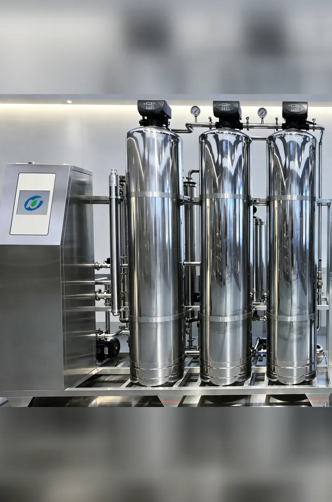

Stations · Schools · Small communities
1,000 LPH Community RO Water Refilling System
≈ 8,000 L in an 8-hour day — roughly 400 five-gallon containers. Groundwater / deep-well ready.
Equipment selection in plain language — for station owners, not engineers
A refilling station runs on one treatment line: filtration matched to your water source, an RO unit sized to your daily containers, and final disinfection. This page shows how it works, how to choose, and what maintenance costs.
Get a Configuration Quote ↗
One integrated line: source-water tank and pump, filtration matched to your water source, an RO unit sized at 2–2.5 times your daily container sales, and UV disinfection before storage. KONCHE, manufacturing RO systems in Shenzhen since 1997, configures and supplies these complete lines for Philippine stations through local distributors.
Related: Business start-up guide — capital, permits, income · Drinking Water Systems · Reverse Osmosis Systems · All KONCHE solutions

≈ 8,000 L in an 8-hour day — roughly 400 five-gallon containers. Groundwater / deep-well ready.

≈ 4,000 L in an 8-hour day — roughly 200 five-gallon containers. PLC automatic control.
Municipal supply and deep well are not interchangeable — the wrong filtration is the most common reason for early membrane replacement.
| Compare | Municipal / LGU piped supply | Deep well |
|---|---|---|
| Water character | Treated, chlorinated; quality varies by area | Often higher hardness, iron or salinity; varies well by well |
| Filtration needed | Sediment filter + activated carbon | Stronger multimedia filtration, iron removal, softening |
| Check first | A simple TDS reading of your supply | A full water analysis (TDS, hardness, iron) |
One 5-gallon container holds about 19 liters. Choose a system rated at about 2–2.5 times your daily sales — real output runs below rated output, and you need headroom for peak days.
| Containers sold per day | Purified water needed | Suggested system class |
|---|---|---|
| 100 × 5-gallon | ≈ 1,900 L/day (≈ 500 GPD) | 1,000–1,500 GPD |
| 200 × 5-gallon | ≈ 3,800 L/day (≈ 1,000 GPD) | 2,000–2,500 GPD |
| 400 × 5-gallon | ≈ 7,600 L/day (≈ 2,000 GPD) | 4,000–5,000 GPD |
Reference sizing. KONCHE confirms the final configuration from your water analysis after engineering review.
Send your water source (municipal or deep well), daily container target and any water analysis you have. KONCHE will recommend a configuration and connect you with a distributor serving your area.